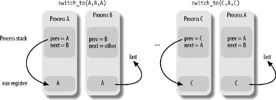

{% include JB/setup %}
{% raw %}
<div>


<a name="understandlk-CHP-3-SECT-3"></a>
<h3 class="docSection1Title">3.3. Process Switch</h3><a name="IDX-CHP-3-0797"></a>
<a name="IDX-CHP-3-0798"></a>
<a name="IDX-CHP-3-0799"></a>
<a name="IDX-CHP-3-0800"></a>
<a name="IDX-CHP-3-0801"></a>
<a name="IDX-CHP-3-0802"></a>
<a name="IDX-CHP-3-0803"></a>
<a name="IDX-CHP-3-0804"></a>
<a name="IDX-CHP-3-0805"></a>
<a name="IDX-CHP-3-0806"></a>
<a name="IDX-CHP-3-0807"></a>
<a name="IDX-CHP-3-0808"></a>
<a name="IDX-CHP-3-0809"></a>
<a name="IDX-CHP-3-0810"></a>
<a name="IDX-CHP-3-0811"></a>
<a name="IDX-CHP-3-0812"></a>
<p class="docText1">To control the execution of processes, the kernel must be able to suspend the execution of the process running on the CPU and resume the execution of some other process previously suspended. This activity goes variously by the names <span class="docEmphasis">process switch</span>, <span class="docEmphasis">task switch</span>, or <span class="docEmphasis">context switch</span>. The next sections describe the elements of process switching in Linux.</p>
<a name="understandlk-CHP-3-SECT-3.1"></a>
<h4 class="docSection2Title">3.3.1. Hardware Context</h4>
<p class="docText1">While each process can have its own address space, all processes have to share the CPU registers. So before resuming the execution of a process, the kernel must ensure that each such register is loaded with the value it had when the process was suspended.</p>
<p class="docText1">The set of data that must be loaded into the registers before the process resumes its execution on the CPU is called the <span class="docEmphasis">hardware context</span><a name="IDX-CHP-3-0813"></a>
<a name="IDX-CHP-3-0814"></a> 
. The hardware context is a subset of the process execution context, which includes all information needed for the process execution. In Linux, a part of the hardware context of a process is stored in the process descriptor, while the remaining part is saved in the Kernel Mode stack.</p>
<p class="docText1">In the description that follows, we will assume the <tt class="calibre25">prev</tt> local variable refers to the process descriptor of the process being switched out and <tt class="calibre25">next</tt> refers to the one being switched in to replace it. We can thus define a <span class="docEmphasis">process switch</span> as the activity consisting of saving the hardware context of <tt class="calibre25">prev</tt> and replacing it with the hardware context of <tt class="calibre25">next</tt>. Because process switches<a name="IDX-CHP-3-0815"></a> 
 occur quite often, it is important to minimize the time spent in saving and loading hardware contexts.</p>
<p class="docText1">Old versions of Linux took advantage of the hardware support offered by the 80x86 architecture and performed a process switch through a <tt class="calibre25">far jmp</tt><a name="IDX-CHP-3-0816"></a> 
 instruction<sup class="docFootnote"><a class="pcalibre5 docLink pcalibre1" href="#understandlk-CHP-3-FN5">[*]</a></sup> to the selector of the Task State Segment Descriptor of the <tt class="calibre25">next</tt> process. While executing the instruction, the CPU performs a <span class="docEmphasis">hardware context switch</span> by automatically saving the old hardware context and loading a new one. But Linux 2.6 uses software to perform a process switch for the following reasons:</p><blockquote class="calibre22"><p class="docFootnote1"><sup class="calibre24"><a name="understandlk-CHP-3-FN5">[*]</a></sup> <tt class="calibre42">far jmp</tt> instructions modify both the <tt class="calibre42">cs</tt> and <tt class="calibre42">eip</tt> registers, while simple <tt class="calibre42">jmp</tt> instructions modify only <tt class="calibre42">eip</tt>.</p></blockquote>
<ul class="calibre11"><li class="calibre12"><p class="docText1">Step-by-step switching performed through a sequence of <tt class="calibre25">mov</tt> instructions allows better control over the validity of the data being loaded. In particular, it is possible to check the values of the <tt class="calibre25">ds</tt> and <tt class="calibre25">es</tt> segmentation registers, which might have been forged by a malicious user. This type of checking is not possible when using a single <tt class="calibre25">far jmp</tt> instruction.</p></li><li class="calibre12"><p class="docText1">The amount of time required by the old approach and the new approach is about the same. However, it is not possible to optimize a hardware context switch, while there might be room for improving the current switching code.</p></li></ul>
<p class="docText1">Process switching occurs only in Kernel Mode. The contents of all registers used by a process in User Mode have already been saved on the Kernel Mode stack before performing process switching (see <a class="pcalibre5 docLink pcalibre1" href="understandlk-CHP-4.html#understandlk-CHP-4">Chapter 4</a>). This includes the contents of the <tt class="calibre25">ss</tt> and <tt class="calibre25">esp</tt> pair that specifies the User Mode stack pointer address.</p>
<a name="understandlk-CHP-3-SECT-3.2"></a>
<h4 class="docSection2Title">3.3.2. Task State Segment</h4><a name="IDX-CHP-3-0817"></a>
<a name="IDX-CHP-3-0818"></a>
<a name="IDX-CHP-3-0819"></a>
<p class="docText1">The 80x86 architecture includes a specific segment type called the <span class="docEmphasis">Task State Segment</span> (TSS), to store hardware contexts. Although Linux doesn't use hardware context switches, it is nonetheless forced to set up a TSS for each distinct CPU in<a name="IDX-CHP-3-0820"></a> 
 the system. This is done for two main reasons:</p>
<ul class="calibre11"><li class="calibre12"><p class="docText1">When an 80x86 CPU switches from User Mode to Kernel Mode, it fetches the address of the Kernel Mode stack from the TSS (see the sections "<a class="pcalibre5 docLink pcalibre1" href="understandlk-CHP-4-SECT-2.html#understandlk-CHP-4-SECT-2.4">Hardware Handling of Interrupts and Exceptions</a>" in <a class="pcalibre5 docLink pcalibre1" href="understandlk-CHP-4.html#understandlk-CHP-4">Chapter 4</a> and "<a class="pcalibre5 docLink pcalibre1" href="understandlk-CHP-10-SECT-3.html#understandlk-CHP-10-SECT-3.2">Issuing a System Call via the sysenter Instruction</a>" in <a class="pcalibre5 docLink pcalibre1" href="understandlk-CHP-10.html#understandlk-CHP-10">Chapter 10</a>).</p></li><li class="calibre12"><p class="docText1">When a User Mode process attempts to access an I/O port by means of an <tt class="calibre25">in</tt> or <tt class="calibre25">out</tt><a name="IDX-CHP-3-0821"></a> 
 instruction, the CPU may need to access an I/O Permission Bitmap stored in the TSS to verify whether the process is allowed to address the port.</p><p class="docText1">More precisely, when a process executes an <tt class="calibre25">in</tt> or <tt class="calibre25">out</tt> I/O instruction in User Mode, the control unit performs the following operations:</p><div class="calibre44"><ol class="docList3" type="1"><li class="calibre12"><div class="calibre45"><p class="docList">It checks the 2-bit IOPL field in the <tt class="calibre25">eflags</tt><a name="IDX-CHP-3-0822"></a> 
 register. If it is set to 3, the control unit executes the I/O instructions. Otherwise, it performs the next check.</p></div></li><li class="calibre12"><div class="calibre45"><p class="docList">It accesses the <tt class="calibre25">tr</tt><a name="IDX-CHP-3-0823"></a> 
 register to determine the current TSS, and thus the proper I/O Permission Bitmap.</p></div></li><li class="calibre12"><div class="calibre45"><p class="docList">It checks the bit of the I/O Permission Bitmap corresponding to the I/O port specified in the I/O instruction. If it is cleared, the instruction is executed; otherwise, the control unit raises a "General protection<a name="IDX-CHP-3-0824"></a> 
" exception.</p></div></li></ol></div></li></ul>
<p class="docText1">The <tt class="calibre25">tss_struct</tt> structure describes the format of the TSS. As already mentioned in <a class="pcalibre5 docLink pcalibre1" href="understandlk-CHP-2.html#understandlk-CHP-2">Chapter 2</a>, the <tt class="calibre25">init_tss</tt> array stores one TSS for each CPU on the system. At each process switch, the kernel updates some fields of the TSS so that the corresponding CPU's control unit may safely retrieve the information it needs. Thus, the TSS reflects the privilege of the current process on the CPU, but there is no need to maintain TSSs for processes when they're not running.</p>
<p class="docText1">Each TSS has its own 8-byte <span class="docEmphasis">Task State Segment Descriptor</span> (TSSD). This descriptor includes a 32-bit <tt class="calibre25">Base</tt> field that points to the TSS starting address and a 20-bit <tt class="calibre25">Limit</tt> field. The <tt class="calibre25">S</tt> flag of a TSSD is cleared to denote the fact that the corresponding TSS is a System Segment (see the section "<a class="pcalibre5 docLink pcalibre1" href="understandlk-CHP-2-SECT-2.html#understandlk-CHP-2-SECT-2.2">Segment Descriptors</a>" in <a class="pcalibre5 docLink pcalibre1" href="understandlk-CHP-2.html#understandlk-CHP-2">Chapter 2</a>).</p>
<p class="docText1">The <tt class="calibre25">Type</tt> field is set to either 9 or 11 to denote that the segment is actually a TSS. In the Intel's original design, each process in the system should refer to its own TSS; the second least significant bit of the <tt class="calibre25">Type</tt> field is called the <span class="docEmphasis">Busy bit</span>; it is set to 1 if the process is being executed by a CPU, and to 0 otherwise. In Linux design, there is just one TSS for each CPU, so the Busy bit is always set to 1.</p>
<p class="docText1">The TSSDs created by Linux are stored in the Global Descriptor Table (GDT), whose base address is stored in the <tt class="calibre25">gdtr</tt><a name="IDX-CHP-3-0825"></a> 
 register of each CPU. The <tt class="calibre25">tr</tt> register of each CPU contains the TSSD Selector of the corresponding TSS. The register also includes two hidden, nonprogrammable fields: the <tt class="calibre25">Base</tt> and <tt class="calibre25">Limit</tt> fields of the TSSD. In this way, the processor can address the TSS directly without having to retrieve the TSS address from the GDT.</p>
<a name="understandlk-CHP-3-SECT-3.2.1"></a>
<h5 class="docSection3Title">3.3.2.1. The thread field</h5><a name="IDX-CHP-3-0826"></a>
<a name="IDX-CHP-3-0827"></a>
<a name="IDX-CHP-3-0828"></a>
<p class="docText1">At every process switch, the hardware context of the process being replaced must be saved somewhere. It cannot be saved on the TSS, as in the original Intel design, because Linux uses a single TSS for each processor, instead of one for every process.</p>
<p class="docText1">Thus, each process descriptor includes a field called <tt class="calibre25">thread</tt> of type <tt class="calibre25">thread_struct</tt>, in which the kernel saves the hardware context whenever the process is being switched out. As we'll see later, this data structure includes fields for most of the CPU registers, except the general-purpose registers such as <tt class="calibre25">eax</tt>, <tt class="calibre25">ebx</tt>, etc., which are stored in the Kernel Mode stack.</p>
<a name="understandlk-CHP-3-SECT-3.3"></a>
<h4 class="docSection2Title">3.3.3. Performing the Process Switch</h4>
<p class="docText1">A process switch may occur at just one well-defined point: the <tt class="calibre25">schedule( )</tt> function, which is discussed at length in <a class="pcalibre5 docLink pcalibre1" href="understandlk-CHP-7.html#understandlk-CHP-7">Chapter 7</a>. Here, we are only concerned with how the kernel performs a process switch.</p>
<p class="docText1">Essentially, every process switch consists of two steps:</p>
<div class="calibre44"><ol class="docList1" type="1"><li class="calibre12"><div class="calibre45"><p class="docList">Switching the Page Global Directory to install a new address space; we'll describe this step in <a class="pcalibre5 docLink pcalibre1" href="understandlk-CHP-9.html#understandlk-CHP-9">Chapter 9</a>.</p></div></li><li class="calibre12"><div class="calibre45"><p class="docList">Switching the Kernel Mode stack and the hardware context, which provides all the information needed by the kernel to execute the new process, including the CPU registers.</p></div></li></ol></div>
<p class="docText1">Again, we assume that <tt class="calibre25">prev</tt> points to the descriptor of the process being replaced, and <tt class="calibre25">next</tt> to the descriptor of the process being activated. As we'll see in <a class="pcalibre5 docLink pcalibre1" href="understandlk-CHP-7.html#understandlk-CHP-7">Chapter 7</a>, <tt class="calibre25">prev</tt> and <tt class="calibre25">next</tt> are local variables of the <tt class="calibre25">schedule( )</tt> function.</p>
<a name="understandlk-CHP-3-SECT-3.3.1"></a>
<h5 class="docSection3Title">3.3.3.1. The switch_to macro</h5><a name="IDX-CHP-3-0829"></a>
<p class="docText1">The second step of the process switch is performed by the <tt class="calibre25">switch_to</tt> macro. It is one of the most hardware-dependent routines of the kernel, and it takes some effort to understand what it does.</p>
<p class="docText1">First of all, the macro has three parameters, called <tt class="calibre25">prev</tt>, <tt class="calibre25">next</tt>, and <tt class="calibre25">last</tt>. You might easily guess the role of <tt class="calibre25">prev</tt> and <tt class="calibre25">next</tt>: they are just placeholders for the local variables <tt class="calibre25">prev</tt> and <tt class="calibre25">next</tt>, that is, they are input parameters that specify the memory locations containing the descriptor address of the process being replaced and the descriptor address of the new process, respectively.</p>
<p class="docText1">What about the third parameter, <tt class="calibre25">last</tt>? Well, in any process switch three processes are involved, not just two. Suppose the kernel decides to switch off process A and to activate process B. In the <tt class="calibre25">schedule( )</tt> function, <tt class="calibre25">prev</tt> points to A's descriptor and <tt class="calibre25">next</tt> points to B's descriptor. As soon as the <tt class="calibre25">switch_to</tt> macro deactivates A, the execution flow of A freezes.</p>
<p class="docText1">Later, when the kernel wants to reactivate A, it must switch off another process C (in general, this is different from B) by executing another <tt class="calibre25">switch_to</tt> macro with <tt class="calibre25">prev</tt> pointing to C and <tt class="calibre25">next</tt> pointing to A. When A resumes its execution flow, it finds its old Kernel Mode stack, so the <tt class="calibre25">prev</tt> local variable points to A's descriptor and <tt class="calibre25">next</tt> points to B's descriptor. The scheduler, which is now executing on behalf of process A, has lost any reference to C. This reference, however, turns out to be useful to complete the process switching (see <a class="pcalibre5 docLink pcalibre1" href="understandlk-CHP-7.html#understandlk-CHP-7">Chapter 7</a> for more details).</p>
<p class="docText1">The last parameter of the <tt class="calibre25">switch_to</tt> macro is an output parameter that specifies a memory location in which the macro writes the descriptor address of process C (of course, this is done after A resumes its execution). Before the process switching, the macro saves in the <tt class="calibre25">eax</tt> CPU register the content of the variable identified by the first input parameter <tt class="calibre25">prev</tt>that is, the <tt class="calibre25">prev</tt> local variable allocated on the Kernel Mode stack of A. After the process switching, when A has resumed its execution, the macro writes the content of the <tt class="calibre25">eax</tt> CPU register in the memory location of A identified by the third output parameter <tt class="calibre25">last</tt>. Because the CPU register doesn't change across the process switch, this memory location receives the address of C's descriptor. In the current implementation of <tt class="calibre25">schedule( )</tt>, the last parameter identifies the <tt class="calibre25">prev</tt> local variable of A, so <tt class="calibre25">prev</tt> is overwritten with the address of C.</p>
<p class="docText1">The contents of the Kernel Mode stacks of processes A, B, and C are shown in <a class="pcalibre5 docLink pcalibre1" href="#understandlk-CHP-3-FIG-7">Figure 3-7</a>, together with the values of the <tt class="calibre25">eax</tt> register; be warned that the figure shows the value of the <tt class="calibre25">prev</tt> local variable <span class="docEmphasis">before</span> its value is overwritten with the contents of the <tt class="calibre25">eax</tt> register.</p>
<a name="understandlk-CHP-3-FIG-7"></a><p class="calibre14"><center class="calibre8">
<h5 class="docFigureTitle">Figure 3-7. Preserving the reference to process C across a process switch</h5>
</center></p><br class="calibre7"/>
<p class="docText1">The <tt class="calibre25">switch_to</tt> macro is coded in <span class="docEmphasis">extended inline assembly language</span><a name="IDX-CHP-3-0830"></a> 
 that makes for rather complex reading: in fact, the code refers to registers by means of a special positional notation that allows the compiler to freely choose the general-purpose registers to be used. Rather than follow the cumbersome extended inline assembly language, we'll describe what the <tt class="calibre25">switch_to</tt> macro typically does on an 80x86 microprocessor by using standard assembly language:</p>
<div class="calibre44"><ol class="docList1" type="1"><li class="calibre12"><div class="calibre45"><p class="docList">Saves the values of <tt class="calibre25">prev</tt> and <tt class="calibre25">next</tt> in the <tt class="calibre25">eax</tt> and <tt class="calibre25">edx</tt> registers, respectively:</p><pre class="calibre60">
    movl prev, %eax
    movl next, %edx</pre><br class="calibre7"/>
</div></li><li class="calibre12"><div class="calibre45"><p class="docList">Saves the contents of the <tt class="calibre25">eflags</tt><a name="IDX-CHP-3-0831"></a> 
 and <tt class="calibre25">ebp</tt> registers in the <tt class="calibre25">prev</tt> Kernel Mode stack. They must be saved because the compiler assumes that they will stay unchanged until the end of <tt class="calibre25">switch_to</tt>:</p><pre class="calibre60">
    pushfl
    pushl %ebp</pre><br class="calibre7"/>
</div></li><li class="calibre12"><div class="calibre45"><p class="docList">Saves the content of <tt class="calibre25">esp</tt> in <tt class="calibre25">prev-&gt;thread.esp</tt> so that the field points to the top of the <tt class="calibre25">prev</tt> Kernel Mode stack:</p><pre class="calibre60">
    movl %esp,484(%eax)</pre><br class="calibre7"/>
<p class="docList">The <tt class="calibre25">484(%eax)</tt> operand identifies the memory cell whose address is the contents of <tt class="calibre25">eax</tt> plus 484.</p></div></li><li class="calibre12"><div class="calibre45"><p class="docList">Loads <tt class="calibre25">next-&gt;thread.esp</tt> in <tt class="calibre25">esp</tt>. From now on, the kernel operates on the Kernel Mode stack of <tt class="calibre25">next</tt>, so this instruction performs the actual process switch from <tt class="calibre25">prev</tt> to <tt class="calibre25">next</tt>. Because the address of a process descriptor is closely related to that of the Kernel Mode stack (as explained in the section "<a class="pcalibre5 docLink pcalibre1" href="understandlk-CHP-3-SECT-2.html#understandlk-CHP-3-SECT-2.2">Identifying a Process</a>" earlier in this chapter), changing the kernel stack means changing the current process:</p><pre class="calibre60">
    movl 484(%edx), %esp</pre><br class="calibre7"/>
</div></li><li class="calibre12"><div class="calibre45"><p class="docList">Saves the address labeled <tt class="calibre25">1</tt> (shown later in this section) in <tt class="calibre25">prev-&gt;thread.eip</tt>. When the process being replaced resumes its execution, the process executes the instruction labeled as <tt class="calibre25">1</tt>:</p><pre class="calibre60">
    movl $1f, 480(%eax)</pre><br class="calibre7"/>
</div></li><li class="calibre12"><div class="calibre45"><p class="docList">On the Kernel Mode stack of <tt class="calibre25">next</tt>, the macro pushes the <tt class="calibre25">next-&gt;thread.eip</tt> value, which, in most cases, is the address labeled as <tt class="calibre25">1</tt>:</p><pre class="calibre60">
    pushl 480(%edx)</pre><br class="calibre7"/>
</div></li><li class="calibre12"><div class="calibre45"><p class="docList">Jumps to the <tt class="calibre25">_ _switch_to( )</tt> C function (see next):</p><pre class="calibre60">
    jmp _ _switch_to</pre><br class="calibre7"/>
</div></li><li class="calibre12"><div class="calibre45"><p class="docList">Here process A that was replaced by B gets the CPU again: it executes a few instructions that restore the contents of the <tt class="calibre25">eflags</tt> and <tt class="calibre25">ebp</tt> registers. The first of these two instructions is labeled as <tt class="calibre25">1</tt>:</p><pre class="calibre60">
    1:
        popl %ebp
        popfl</pre><br class="calibre7"/>
<p class="docList">Notice how these <tt class="calibre25">pop</tt> instructions refer to the kernel stack of the <tt class="calibre25">prev</tt> process. They will be executed when the scheduler selects <tt class="calibre25">prev</tt> as the new process to be executed on the CPU, thus invoking <tt class="calibre25">switch_to</tt> with <tt class="calibre25">prev</tt> as the second parameter. Therefore, the <tt class="calibre25">esp</tt> register points to the <tt class="calibre25">prev</tt>'s Kernel Mode stack.</p></div></li><li class="calibre12"><div class="calibre45"><p class="docList">Copies the content of the <tt class="calibre25">eax</tt> register (loaded in step 1 above) into the memory location identified by the third parameter <tt class="calibre25">last</tt> of the <tt class="calibre25">switch_to</tt> macro:</p><pre class="calibre60">
    movl %eax, last</pre><br class="calibre7"/>
<p class="docList">As discussed earlier, the <tt class="calibre25">eax</tt> register points to the descriptor of the process that has just been replaced.<sup class="docFootnote"><a class="pcalibre5 docLink pcalibre1" href="#understandlk-CHP-3-FN6">[*]</a></sup></p><blockquote class="calibre22"><p class="docFootnote2"><sup class="calibre24"><a name="understandlk-CHP-3-FN6">[*]</a></sup> As stated earlier in this section, the current implementation of the <tt class="calibre42">schedule( )</tt> function reuses the <tt class="calibre42">prev</tt> local variable, so that the assembly language instruction looks like <tt class="calibre42">movl %eax,prev</tt>.</p></blockquote></div></li></ol></div>
<a name="understandlk-CHP-3-SECT-3.3.2"></a>
<h5 class="docSection3Title">3.3.3.2. The _ _switch_to ( ) function</h5><a name="IDX-CHP-3-0832"></a>
<a name="IDX-CHP-3-0833"></a>
<a name="IDX-CHP-3-0834"></a>
<a name="IDX-CHP-3-0835"></a>
<a name="IDX-CHP-3-0836"></a>
<a name="IDX-CHP-3-0837"></a>
<a name="IDX-CHP-3-0838"></a>
<p class="docText1">The <tt class="calibre25">_ _switch_to( )</tt> function does the bulk of the process switch started by the <tt class="calibre25">switch_to( )</tt> macro. It acts on the <tt class="calibre25">prev_p</tt> and <tt class="calibre25">next_p</tt> parameters that denote the former process and the new process. This function call is different from the average function call, though, because <tt class="calibre25">_ _switch_to( )</tt> takes the <tt class="calibre25">prev_p</tt> and <tt class="calibre25">next_p</tt> parameters from the <tt class="calibre25">eax</tt> and <tt class="calibre25">edx</tt> registers (where we saw they were stored), not from the stack like most functions. To force the function to go to the registers for its parameters, the kernel uses the <tt class="calibre25">_ _attribute_ _</tt> and <tt class="calibre25">regparm</tt> keywords, which are nonstandard extensions of the C language implemented by the <tt class="calibre25">gcc</tt> compiler. The <tt class="calibre25">_ _switch_to( )</tt> function is declared in the <i class="docEmphasis">include /asm-i386 /system.h</i> header file as follows:</p>
<pre class="calibre27">
    _ _switch_to(struct task_struct *prev_p,
                struct task_struct *next_p)
       _ _attribute_ _(regparm(3));</pre><br class="calibre7"/>
<p class="docText1">The steps performed by the function are the following:</p>
<div class="calibre44"><ol class="docList1" type="1"><li class="calibre12"><div class="calibre45"><p class="docList">Executes the code yielded by the <tt class="calibre25">_ _unlazy_fpu( )</tt> macro (see the section "<a class="pcalibre5 docLink pcalibre1" href="#understandlk-CHP-3-SECT-3.4">Saving and Loading the FPU 
, MMX, and XMM Registers</a>" later in this chapter) to optionally save the contents of the FPU, MMX, and XMM registers<a name="IDX-CHP-3-0840"></a> 
 of the <tt class="calibre25">prev_p</tt> process.</p><pre class="calibre60">
    _ _unlazy_fpu(prev_p);</pre><br class="calibre7"/>
</div></li><li class="calibre12"><div class="calibre45"><p class="docList">Executes the <tt class="calibre25">smp_processor_id( )</tt> macro to get the index of the <span class="docEmphasis">local CPU</span><a name="IDX-CHP-3-0841"></a> 
, namely the CPU that executes the code. The macro gets the index from the <tt class="calibre25">cpu</tt> field of the <tt class="calibre25">tHRead_info</tt> structure of the current process and stores it into the <tt class="calibre25">cpu</tt> local variable.</p></div></li><li class="calibre12"><div class="calibre45"><p class="docList">Loads <tt class="calibre25">next_p-&gt;thread.esp0</tt> in the <tt class="calibre25">esp0</tt> field of the TSS relative to the local CPU; as we'll see in the section "<a class="pcalibre5 docLink pcalibre1" href="understandlk-CHP-10-SECT-3.html#understandlk-CHP-10-SECT-3.2">Issuing a System Call via the sysenter Instruction</a><a name="IDX-CHP-3-0842"></a> 
" in <a class="pcalibre5 docLink pcalibre1" href="understandlk-CHP-10.html#understandlk-CHP-10">Chapter 10</a>, any future privilege level change from User Mode to Kernel Mode raised by a <tt class="calibre25">sysenter</tt> assembly instruction will copy this address in the <tt class="calibre25">esp</tt> register:</p><pre class="calibre60">
    init_tss[cpu].esp0 = next_p-&gt;thread.esp0;</pre><br class="calibre7"/>
</div></li><li class="calibre12"><div class="calibre45"><p class="docList">Loads in the Global Descriptor Table of the local CPU the Thread-Local Storage (TLS) segments used by the <tt class="calibre25">next_p</tt> process; the three Segment Selectors are stored in the <tt class="calibre25">tls_array</tt> array inside the process descriptor (see the section "<a class="pcalibre5 docLink pcalibre1" href="understandlk-CHP-2-SECT-3.html#understandlk-CHP-2-SECT-3">Segmentation in Linux</a>" in <a class="pcalibre5 docLink pcalibre1" href="understandlk-CHP-2.html#understandlk-CHP-2">Chapter 2</a>).</p><pre class="calibre60">
    cpu_gdt_table[cpu][6] = next_p-&gt;thread.tls_array[0];
    cpu_gdt_table[cpu][7] = next_p-&gt;thread.tls_array[1];
    cpu_gdt_table[cpu][8] = next_p-&gt;thread.tls_array[2];</pre><br class="calibre7"/>
</div></li><li class="calibre12"><div class="calibre45"><p class="docList">Stores the contents of the <tt class="calibre25">fs</tt> and <tt class="calibre25">gs</tt> segmentation registers in <tt class="calibre25">prev_p-&gt;thread.fs</tt> and <tt class="calibre25">prev_p-&gt;thread.gs</tt>, respectively; the corresponding assembly language instructions are:</p><pre class="calibre60">
    movl %fs, 40(%esi)
    movl %gs, 44(%esi)</pre><br class="calibre7"/>
<p class="docList">The <tt class="calibre25">esi</tt> register points to the <tt class="calibre25">prev_p-&gt;thread</tt> structure.</p></div></li><li class="calibre12"><div class="calibre45"><p class="docList">If the <tt class="calibre25">fs</tt> or the <tt class="calibre25">gs</tt> segmentation register have been used either by the <tt class="calibre25">prev_p</tt> or by the <tt class="calibre25">next_p</tt> process (i.e., if they have a nonzero value), loads into these registers the values stored in the <tt class="calibre25">thread_struct</tt> descriptor of the <tt class="calibre25">next_p</tt> process. This step logically complements the actions performed in the previous step. The main assembly language instructions are:</p><pre class="calibre60">
    movl 40(%ebx),%fs
    movl 44(%ebx),%gs</pre><br class="calibre7"/>
<p class="docList">The <tt class="calibre25">ebx</tt> register points to the <tt class="calibre25">next_p-&gt;thread</tt> structure. The code is actually more intricate, as an exception might be raised by the CPU when it detects an invalid segment register value. The code takes this possibility into account by adopting a "fix-up" approach (see the section "<a class="pcalibre5 docLink pcalibre1" href="understandlk-CHP-10-SECT-4.html#understandlk-CHP-10-SECT-4.3">Dynamic Address Checking: The Fix-up Code</a>" in <a class="pcalibre5 docLink pcalibre1" href="understandlk-CHP-10.html#understandlk-CHP-10">Chapter 10</a>).</p></div></li><li class="calibre12"><div class="calibre45"><p class="docList">Loads six of the <tt class="calibre25">dr0</tt>,..., <tt class="calibre25">dr7</tt> debug registers<a name="IDX-CHP-3-0843"></a>
<sup class="docFootnote"><a class="pcalibre5 docLink pcalibre1" href="#understandlk-CHP-3-FN7">[*]</a></sup> with the contents of the <tt class="calibre25">next_p-&gt;thread.debugreg</tt> array. This is done only if <tt class="calibre25">next_p</tt> was using the debug registers when it was suspended (that is, field <tt class="calibre25">next_p-&gt;thread.debugreg[7]</tt> is not 0). These registers need not be saved, because the <tt class="calibre25">prev_p-&gt;thread.debugreg</tt> array is modified only when a debugger wants to monitor <tt class="calibre25">prev</tt>:</p><blockquote class="calibre22"><p class="docFootnote2"><sup class="calibre24"><a name="understandlk-CHP-3-FN7">[*]</a></sup> The 80x86 debug registers allow a process to be monitored by the hardware. Up to four breakpoint areas may be defined. Whenever a monitored process issues a linear address included in one of the breakpoint areas, an exception occurs.</p></blockquote><pre class="calibre60">
    if (next_p-&gt;thread.debugreg[7]){
        loaddebug(&amp;next_p-&gt;thread, 0);
        loaddebug(&amp;next_p-&gt;thread, 1);
        loaddebug(&amp;next_p-&gt;thread, 2);
        loaddebug(&amp;next_p-&gt;thread, 3);
        /* no 4 and 5 */
        loaddebug(&amp;next_p-&gt;thread, 6);
        loaddebug(&amp;next_p-&gt;thread, 7);
    }</pre><br class="calibre7"/>
</div></li><li class="calibre12"><div class="calibre45"><p class="docList">Updates the I/O bitmap in the TSS, if necessary. This must be done when either <tt class="calibre25">next_p</tt> or <tt class="calibre25">prev_p</tt> has its own customized I/O Permission Bitmap:</p><pre class="calibre60">
    if (prev_p-&gt;thread.io_bitmap_ptr || next_p-&gt;thread.io_bitmap_ptr)
        handle_io_bitmap(&amp;next_p-&gt;thread, &amp;init_tss[cpu]);</pre><br class="calibre7"/>
<p class="docList">Because processes seldom modify the I/O Permission Bitmap, this bitmap is handled in a "lazy" mode: the actual bitmap is copied into the TSS of the local CPU only if a process actually accesses an I/O port in the current timeslice. The customized I/O Permission Bitmap of a process is stored in a buffer pointed to by the <tt class="calibre25">io_bitmap_ptr</tt> field of the <tt class="calibre25">tHRead_info</tt> structure. The <tt class="calibre25">handle_io_bitmap( )</tt> function sets up the <tt class="calibre25">io_bitmap</tt> field of the TSS used by the local CPU for the <tt class="calibre25">next_p</tt> process as follows:</p><ul class="calibre61"><li class="calibre12"><p class="docList">If the <tt class="calibre25">next_p</tt> process does not have its own customized I/O Permission Bitmap, the <tt class="calibre25">io_bitmap</tt> field of the TSS is set to the value <tt class="calibre25">0x8000</tt>.</p></li><li class="calibre12"><p class="docList">If the <tt class="calibre25">next_p</tt> process has its own customized I/O Permission Bitmap, the <tt class="calibre25">io_bitmap</tt> field of the TSS is set to the value <tt class="calibre25">0x9000</tt>.</p></li></ul><p class="docList">The <tt class="calibre25">io_bitmap</tt> field of the TSS should contain an offset inside the TSS where the actual bitmap is stored. The <tt class="calibre25">0x8000</tt> and <tt class="calibre25">0x9000</tt> values point outside of the TSS limit and will thus cause a "General protection<a name="IDX-CHP-3-0844"></a> 
" exception whenever the User Mode process attempts to access an I/O port (see the section "<a class="pcalibre5 docLink pcalibre1" href="understandlk-CHP-4-SECT-2.html#understandlk-CHP-4-SECT-2.2">Exceptions</a>" in <a class="pcalibre5 docLink pcalibre1" href="understandlk-CHP-4.html#understandlk-CHP-4">Chapter 4</a>). The <tt class="calibre25">do_general_protection( )</tt> exception handler will check the value stored in the <tt class="calibre25">io_bitmap</tt> field: if it is <tt class="calibre25">0x8000</tt>, the function sends a <tt class="calibre25">SIGSEGV</tt> signal to the User Mode process; otherwise, if it is <tt class="calibre25">0x9000</tt>, the function copies the process bitmap (pointed to by the <tt class="calibre25">io_bitmap_ptr</tt> field in the <tt class="calibre25">tHRead_info</tt> structure) in the TSS of the local CPU, sets the <tt class="calibre25">io_bitmap</tt> field to the actual bitmap offset (104), and forces a new execution of the faulty assembly language instruction.</p></div></li><li class="calibre12"><div class="calibre45"><p class="docList">Terminates. The <tt class="calibre25">_ _switch_to( )</tt> C function ends by means of the statement:</p><pre class="calibre60">
    return prev_p;</pre><br class="calibre7"/>
<p class="docList">The corresponding assembly language instructions generated by the compiler are:</p><pre class="calibre60">
    movl %edi,%eax
    ret<a name="IDX-CHP-3-0845"></a>
</pre><br class="calibre7"/>
<p class="docList">The <tt class="calibre25">prev_p</tt> parameter (now in <tt class="calibre25">edi</tt>) is copied into <tt class="calibre25">eax</tt>, because by default the return value of any C function is passed in the <tt class="calibre25">eax</tt> register. Notice that the value of <tt class="calibre25">eax</tt> is thus preserved across the invocation of <tt class="calibre25">_ _switch_to( )</tt>; this is quite important, because the invoking <tt class="calibre25">switch_to</tt> macro assumes that <tt class="calibre25">eax</tt> always stores the address of the process descriptor being replaced.</p><p class="docList">The <tt class="calibre25">ret</tt> assembly language instruction loads the <tt class="calibre25">eip</tt> program counter with the return address stored on top of the stack. However, the <tt class="calibre25">_ _switch_to( )</tt> function has been invoked simply by jumping into it. Therefore, the <tt class="calibre25">ret</tt> instruction finds on the stack the address of the instruction labeled as <tt class="calibre25">1</tt>, which was pushed by the <tt class="calibre25">switch_to</tt> macro. If <tt class="calibre25">next_p</tt> was never suspended before because it is being executed for the first time, the function finds the starting address of the <tt class="calibre25">ret_from_fork( )</tt> function (see the section "<a class="pcalibre5 docLink pcalibre1" href="understandlk-CHP-3-SECT-4.html#understandlk-CHP-3-SECT-4.1">The clone( ), fork( ), and vfork( ) System Calls</a>" later in this chapter).</p></div></li></ol></div>
<a name="understandlk-CHP-3-SECT-3.4"></a>
<h4 class="docSection2Title">3.3.4. Saving and Loading the FPU, MMX, and XMM Registers</h4><a name="IDX-CHP-3-0846"></a>
<a name="IDX-CHP-3-0847"></a>
<a name="IDX-CHP-3-0848"></a>
<a name="IDX-CHP-3-0849"></a>
<a name="IDX-CHP-3-0850"></a>
<a name="IDX-CHP-3-0851"></a>
<a name="IDX-CHP-3-0852"></a>
<a name="IDX-CHP-3-0853"></a>
<p class="docText1">Starting with the Intel 80486DX, the arithmetic floating-point unit (FPU) has been integrated into the CPU. The name <span class="docEmphasis">mathematical coprocessor</span> continues to be used in memory of the days when floating-point computations were executed by an expensive special-purpose chip. To maintain compatibility with older models, however, floating-point arithmetic functions are performed with <span class="docEmphasis">ESCAPE instructions</span><a name="IDX-CHP-3-0854"></a> 
, which are instructions with a prefix byte ranging between <tt class="calibre25">0xd8</tt> and <tt class="calibre25">0xdf</tt>. These instructions act on the set of floating-point registers included in the CPU. Clearly, if a process is using ESCAPE instructions, the contents of the floating-point registers belong to its hardware context and should be saved.</p>
<p class="docText1">In later Pentium models, Intel introduced a new set of assembly language instructions into its microprocessors. They are called <span class="docEmphasis">MMX instructions</span><a name="IDX-CHP-3-0855"></a> 
 and are supposed to speed up the execution of multimedia applications. MMX instructions act on the floating-point registers of the FPU. The obvious disadvantage of this architectural choice is that programmers cannot mix floating-point instructions and MMX instructions. The advantage is that operating system designers can ignore the new instruction set, because the same facility of the task-switching code for saving the state of the floating-point unit can also be relied upon to save the MMX state.</p>
<p class="docText1">MMX instructions speed up multimedia applications, because they introduce a single-instruction multiple-data (SIMD) pipeline inside the processor. The Pentium III model extends that SIMD capability: it introduces the <span class="docEmphasis">SSE extensions</span> (Streaming SIMD Extensions), which adds facilities for handling floating-point values contained in eight 128-bit registers called the XMM registers<a name="IDX-CHP-3-0856"></a> 
. Such registers do not overlap with the FPU and MMX registers<a name="IDX-CHP-3-0857"></a> 
, so SSE and FPU/MMX instructions may be freely mixed. The Pentium 4 model introduces yet another feature: the <span class="docEmphasis">SSE2 extensions</span>, which is basically an extension of SSE supporting higher-precision floating-point values. SSE2 uses the same set of XMM registers as SSE.</p>
<p class="docText1">The 80x86 microprocessors do not automatically save the FPU, MMX, and XMM registers in the TSS. However, they include some hardware support that enables kernels to save these registers only when needed. The hardware support consists of a <tt class="calibre25">TS</tt> (Task-Switching) flag in the <tt class="calibre25">cr0</tt><a name="IDX-CHP-3-0858"></a> 
 register, which obeys the following rules:</p>
<ul class="calibre11"><li class="calibre12"><p class="docText1">Every time a hardware context switch is performed, the <tt class="calibre25">TS</tt> flag is set.</p></li><li class="calibre12"><p class="docText1">Every time an ESCAPE, MMX, SSE, or SSE2 instruction is executed when the <tt class="calibre25">TS</tt> flag is set, the control unit raises a "Device not available<a name="IDX-CHP-3-0859"></a> 
" exception (see <a class="pcalibre5 docLink pcalibre1" href="understandlk-CHP-4.html#understandlk-CHP-4">Chapter 4</a>).</p></li></ul>
<p class="docText1">The <tt class="calibre25">TS</tt> flag allows the kernel to save and restore the FPU, MMX, and XMM registers only when really needed. To illustrate how it works, suppose that a process A is using the mathematical coprocessor. When a context switch occurs from A to B, the kernel sets the TS flag and saves the floating-point registers into the TSS of process A. If the new process B does not use the mathematical coprocessor, the kernel won't need to restore the contents of the floating-point registers. But as soon as B tries to execute an ESCAPE or MMX instruction, the CPU raises a "Device not available" exception, and the corresponding handler loads the floating-point registers with the values saved in the TSS of process B.</p>
<p class="docText1">Let's now describe the data structures introduced to handle selective loading of the FPU, MMX, and XMM registers. They are stored in the <tt class="calibre25">thread.i387</tt> subfield of the process descriptor, whose format is described by the <tt class="calibre25">i387_union</tt> union:</p>
<pre class="calibre27">
    union i387_union {
        struct i387_fsave_struct    fsave;
        struct i387_fxsave_struct   fxsave;
        struct i387_soft_struct     soft;
    };</pre><br class="calibre7"/>
<p class="docText1">As you see, the field may store just one of three different types of data structures. The <tt class="calibre25">i387_soft_struct</tt> type is used by CPU models without a mathematical coprocessor; the Linux kernel still supports these old chips by emulating the coprocessor via software. We don't discuss this legacy case further, however. The <tt class="calibre25">i387_fsave_struct</tt> type is used by CPU models with a mathematical coprocessor and, optionally, an MMX unit. Finally, the <tt class="calibre25">i387_fxsave_struct</tt> type is used by CPU models featuring SSE and SSE2 extensions.</p>
<p class="docText1">The process descriptor includes two additional flags:</p>
<ul class="calibre11"><li class="calibre12"><p class="docText1">The <tt class="calibre25">TS_USEDFPU</tt> flag, which is included in the <tt class="calibre25">status</tt> field of the <tt class="calibre25">thread_info</tt> descriptor. It specifies whether the process used the FPU, MMX, or XMM registers in the current execution run.</p></li><li class="calibre12"><p class="docText1">The <tt class="calibre25">PF_USED_MATH</tt> flag, which is included in the <tt class="calibre25">flags</tt> field of the <tt class="calibre25">task_struct</tt> descriptor. This flag specifies whether the contents of the <tt class="calibre25">thread.i387</tt> subfield are significant. The flag is cleared (not significant) in two cases, shown in the following list.</p><ul class="calibre61"><li class="calibre12"><p class="docText1">When the process starts executing a new program by invoking an <tt class="calibre25">execve( )</tt> system call (see <a class="pcalibre5 docLink pcalibre1" href="understandlk-CHP-20.html#understandlk-CHP-20">Chapter 20</a>). Because control will never return to the former program, the data currently stored in <tt class="calibre25">thread.i387</tt> is never used again.</p></li><li class="calibre12"><p class="docText1">When a process that was executing a program in User Mode starts executing a signal handler procedure (see <a class="pcalibre5 docLink pcalibre1" href="understandlk-CHP-11.html#understandlk-CHP-11">Chapter 11</a>). Because signal handlers are asynchronous with respect to the program execution flow, the floating-point registers could be meaningless to the signal handler. However, the kernel saves the floating-point registers in <tt class="calibre25">thread.i387</tt> before starting the handler and restores them after the handler terminates. Therefore, a signal handler is allowed to use the mathematical coprocessor.</p></li></ul></li></ul>
<a name="understandlk-CHP-3-SECT-3.4.1"></a>
<h5 class="docSection3Title">3.3.4.1. Saving the FPU registers</h5><a name="IDX-CHP-3-0860"></a>
<a name="IDX-CHP-3-0861"></a>
<a name="IDX-CHP-3-0862"></a>
<a name="IDX-CHP-3-0863"></a>
<a name="IDX-CHP-3-0864"></a>
<a name="IDX-CHP-3-0865"></a>
<a name="IDX-CHP-3-0866"></a>
<p class="docText1">As stated earlier, the <tt class="calibre25">_ _switch_to( )</tt> function executes the <tt class="calibre25">_ _unlazy_fpu</tt> macro, passing the process descriptor of the <tt class="calibre25">prev</tt> process being replaced as an argument. The macro checks the value of the <tt class="calibre25">TS_USEDFPU</tt> flags of <tt class="calibre25">prev</tt>. If the flag is set, <tt class="calibre25">prev</tt> has used an FPU, MMX, SSE, or SSE2 instructions; therefore, the kernel must save the relative hardware context:</p>
<pre class="calibre27">
    if (prev-&gt;thread_info-&gt;status &amp; TS_USEDFPU)
        save_init_fpu(prev);</pre><br class="calibre7"/>
<p class="docText1">The <tt class="calibre25">save_init_fpu( )</tt> function, in turn, executes essentially the following operations:</p>
<div class="calibre44"><ol class="docList1" type="1"><li class="calibre12"><div class="calibre45"><p class="docList">Dumps the contents of the FPU registers in the process descriptor of <tt class="calibre25">prev</tt> and then reinitializes the FPU. If the CPU uses SSE/SSE2 extensions, it also dumps the contents of the XMM registers and reinitializes the SSE/SSE2 unit. A couple of powerful extended inline assembly language instructions take care of everything, either:</p><pre class="calibre60">
    asm volatile( "fxsave<a name="IDX-CHP-3-0867"></a> 
 %0 ; fnclex"
        : "=m" (prev-&gt;thread.i387.fxsave) );</pre><br class="calibre7"/>
<p class="docList">if the CPU uses SSE/SSE2 extensions, or otherwise:</p><pre class="calibre60">
    asm volatile( "fnsave<a name="IDX-CHP-3-0868"></a> 
 %0 ; fwait"
        : "=m" (prev-&gt;thread.i387.fsave) );</pre><br class="calibre7"/>
</div></li><li class="calibre12"><div class="calibre45"><p class="docList">Resets the <tt class="calibre25">TS_USEDFPU</tt> flag of <tt class="calibre25">prev</tt>:</p><pre class="calibre60">
    prev-&gt;thread_info-&gt;status &amp;= ~TS_USEDFPU;</pre><br class="calibre7"/>
</div></li><li class="calibre12"><div class="calibre45"><p class="docList">Sets the CW flag of <tt class="calibre25">cr0</tt><a name="IDX-CHP-3-0869"></a> 
 by means of the <tt class="calibre25">stts( )</tt> macro, which in practice yields assembly language instructions like the following:</p><pre class="calibre60">
    movl %cr0, %eax
    orl $8,%eax
    movl %eax, %cr0</pre><br class="calibre7"/>
</div></li></ol></div>
<a name="understandlk-CHP-3-SECT-3.4.2"></a>
<h5 class="docSection3Title">3.3.4.2. Loading the FPU registers</h5><a name="IDX-CHP-3-0870"></a>
<a name="IDX-CHP-3-0871"></a>
<a name="IDX-CHP-3-0872"></a>
<a name="IDX-CHP-3-0873"></a>
<p class="docText1">The contents of the floating-point registers are not restored right after the <tt class="calibre25">next</tt> process resumes execution. However, the <tt class="calibre25">TS</tt> flag of <tt class="calibre25">cr0</tt> has been set by _ _<tt class="calibre25">unlazy_fpu( )</tt>. Thus, the first time the <tt class="calibre25">next</tt> process tries to execute an ESCAPE, MMX, or SSE/SSE2 instruction, the control unit raises a "Device not available" exception, and the kernel (more precisely, the exception handler involved by the exception) runs the <tt class="calibre25">math_state_restore( )</tt> function. The <tt class="calibre25">next</tt> process is identified by this handler as <tt class="calibre25">current</tt>.</p>
<pre class="calibre27">
    void math_state_restore( )
    {
        asm volatile ("clts"); /* clear the TS flag of cr0 */
        if (!(current-&gt;flags &amp; PF_USED_MATH))
            init_fpu(current);
        restore_fpu(current);
        current-&gt;thread.status |= TS_USEDFPU;
    }</pre><br class="calibre7"/>
<p class="docText1">The function clears the CW flags of <tt class="calibre25">cr0</tt>, so that further FPU, MMX, or SSE/SSE2 instructions executed by the process won't trigger the "Device not available" exception. If the contents of the <tt class="calibre25">thread.i387</tt> subfield are not significant, i.e., if the <tt class="calibre25">PF_USED_MATH</tt> flag is equal to 0, <tt class="calibre25">init_fpu()</tt> is invoked to reset the <tt class="calibre25">tHRead.i387</tt> subfield and to set the <tt class="calibre25">PF_USED_MATH</tt> flag of <tt class="calibre25">current</tt> to 1. The <tt class="calibre25">restore_fpu( )</tt> function is then invoked to load the FPU registers with the proper values stored in the <tt class="calibre25">thread.i387</tt> subfield. To do this, either the <tt class="calibre25">fxrstor</tt><a name="IDX-CHP-3-0874"></a> 
 or the <tt class="calibre25">frstor</tt><a name="IDX-CHP-3-0875"></a> 
 assembly language instructions are used, depending on whether the CPU supports SSE/SSE2 extensions. Finally, <tt class="calibre25">math_state_restore( )</tt> sets the <tt class="calibre25">TS_USEDFPU</tt> flag.</p>
<a name="understandlk-CHP-3-SECT-3.4.3"></a>
<h5 class="docSection3Title">3.3.4.3. Using the FPU, MMX, and SSE/SSE2 units in Kernel Mode</h5><a name="IDX-CHP-3-0876"></a>
<a name="IDX-CHP-3-0877"></a>
<a name="IDX-CHP-3-0878"></a>
<a name="IDX-CHP-3-0879"></a>
<a name="IDX-CHP-3-0880"></a>
<a name="IDX-CHP-3-0881"></a>
<a name="IDX-CHP-3-0882"></a>
<p class="docText1">Even the kernel can make use of the FPU, MMX, or SSE/SSE2 units. In doing so, of course, it should avoid interfering with any computation carried on by the current User Mode process. Therefore:</p>
<ul class="calibre11"><li class="calibre12"><p class="docText1">Before using the coprocessor, the kernel must invoke <tt class="calibre25">kernel_fpu_begin( )</tt>, which essentially calls <tt class="calibre25">save_init_fpu( )</tt> to save the contents of the registers if the User Mode process used the FPU (<tt class="calibre25">TS_USEDFPU</tt> flag), and then resets the <tt class="calibre25">TS</tt> flag of the <tt class="calibre25">cr0</tt> register.</p></li><li class="calibre12"><p class="docText1">After using the coprocessor, the kernel must invoke <tt class="calibre25">kernel_fpu_end( )</tt>, which sets the <tt class="calibre25">TS</tt> flag of the <tt class="calibre25">cr0</tt> register.</p></li></ul>
<p class="docText1">Later, when the User Mode process executes a coprocessor instruction, the <tt class="calibre25">math_state_restore( )</tt> function will restore the contents of the registers, just as in process switch handling.</p>
<p class="docText1">It should be noted, however, that the execution time of <tt class="calibre25">kernel_fpu_begin( )</tt> is rather large when the current User Mode process is using the coprocessor, so much as to nullify the speedup obtained by using the FPU, MMX, or SSE/SSE2 units. As a matter of fact, the kernel uses them only in a few places, typically when moving or clearing large memory areas or when computing checksum functions.</p>

<br class="calibre7"/>

</div>

{% endraw %}

